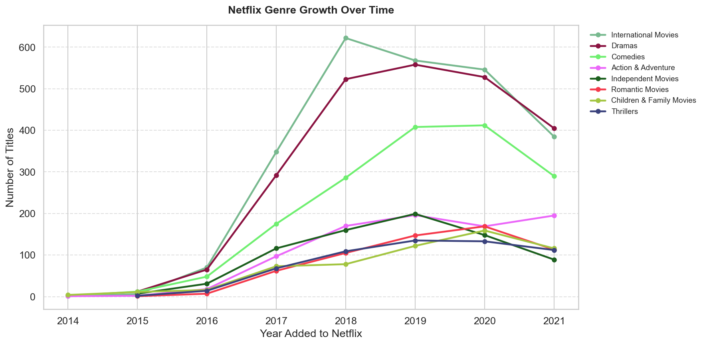
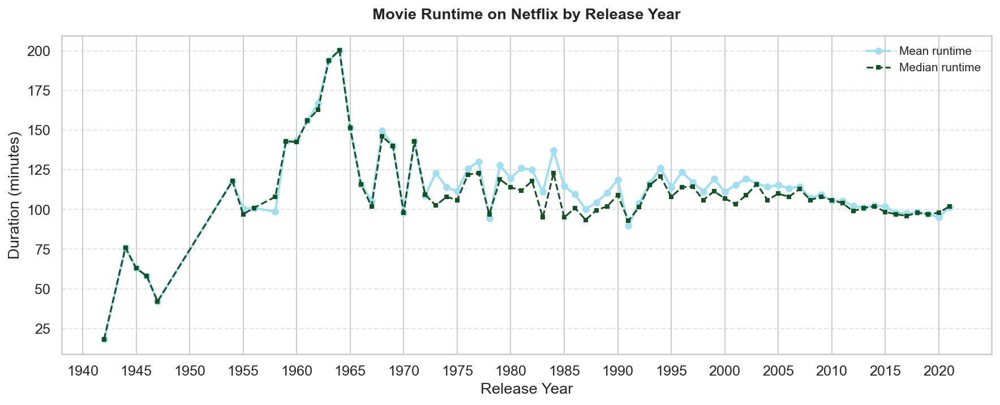

DS4200 — Information Presentation & Data Visualization
Introduction
In recent years, streaming media has surpassed traditional broadcast television as the dominant form of content consumption. This project examines how Netflix uses data-driven decision-making to curate, recommend, and produce content for a global audience. By analyzing trends in content type, production origin, and genre growth, we uncover the strategies that help Netflix attract and retain millions of subscribers. Our analysis highlights the balance between international expansion and content diversity, showing how Netflix’s library reflects both global reach and targeted audience segmentation. Through these insights, we aim to better understand how data shapes user engagement and supports Netflix’s continued competitive advantage in the streaming industry.
Dataset
The dataset used for this analysis is the Netflix Movies and TV Shows Dataset from Kaggle, which provides a comprehensive overview of Netflix’s content library. Each of the initial 8,807 observations in the dataset represents a unique movie or TV show and is detailed through 12 distinct features: show_id (unique id), type (movie or TV show), title, director, cast, country, date_added, release_year, rating (content maturity rating), duration, listed_in (genre), and description. These features allow us to analyze both categorical and numerical patterns across the dataset.
To preserve data volume we decided to fill missing values in attributes such as country and rating with ”Unknown.” However, we chose to drop rows with missing values in fields such as director, cast, and date_added because we couldn’t draw meaningful analysis without this data. In addition to this, we identified duration values (ex. “74 min”) that were incorrectly stored in the rating column and reassigned them to the appropriate field. Next, we engineered a new feature by splitting the duration attribute into numeric values and units (minutes vs. seasons) to allow for more precise analysis. Lastly, we converted the date_added field into a proper datetime format for time-based visualizations. After cleaning, the dataset contained 5,701 unique observations and offered a more reliable representation of Netflix’s catalog to analyze.
References
Visualizations
Tracks how the top 8 genre categories have grown from 2014 to 2021.

Click any country bar to explore its genre breakdown in the linked right panel. Hover segments for exact counts.
Click Movies or TV Shows to explore genre breakdown. Click "Back" button to return. Hover any tile for exact counts and percentages.
Toggle between % of genre and raw count with the radio buttons. Hover any cell for details.
Mean movie runtime by release year across Netflix's full catalog (1942–2021).

Conclusion
Across five visualizations, three consistent themes emerge about how Netflix uses data to shape its content strategy.
Our analysis shows that while the United States remains the dominant content producer, Netflix has significantly expanded its international catalog, with countries such as India, the United Kingdom, and others contributing a growing share of content. The “International” genre has seen the most aggressive growth in recent years and highlights Netflix’s investment in global markets. This suggests that Netflix is not only expanding geographically but is also tailoring content to regional audiences to increase engagement and subscriber growth.
Our analysis reveals stark differences in how maturity ratings distribute across producing countries. Spain concentrates 82.8% of its output at TV-MA, followed by Turkey (58.3%) and France (55.2%), all clustering on the mature end. India and Egypt load heavily onto TV-14 (58.2% and 67.4% respectively), a rating Netflix applies broadly to international content that doesn't map cleanly onto American categories. The United States is the most evenly distributed, with no single rating exceeding 26.2%, and family-friendly ratings like G, PG, and TV-Y appear almost exclusively in U.S. and English-language content.
Our analysis highlights that there has been a growth in genres (Drama and International) and a stability in runtimes since the early 2000s. This suggests that Netflix is expanding its offerings and adjusting its content lengths to match modern viewing preferences and habits. This flexibility allows the platform to remain relevant in a highly competitive streaming market.
One key limitation of our analysis is that the dataset only includes content through 2021, meaning it does not capture more recent shifts in Netflix’s strategy. Future work could extend this analysis by incorporating data from the past five years (2022–2026) to examine how trends in genre distribution, international expansion, and content length have continued to evolve.
Additionally, a deeper exploration of country-specific insights would provide a more detailed understanding of Netflix’s global strategy. For example, future analysis could compare genre preferences, content type distributions, and growth trends across individual countries or regions. This would help identify how Netflix tailors its content to local audiences and which markets are driving the most growth.